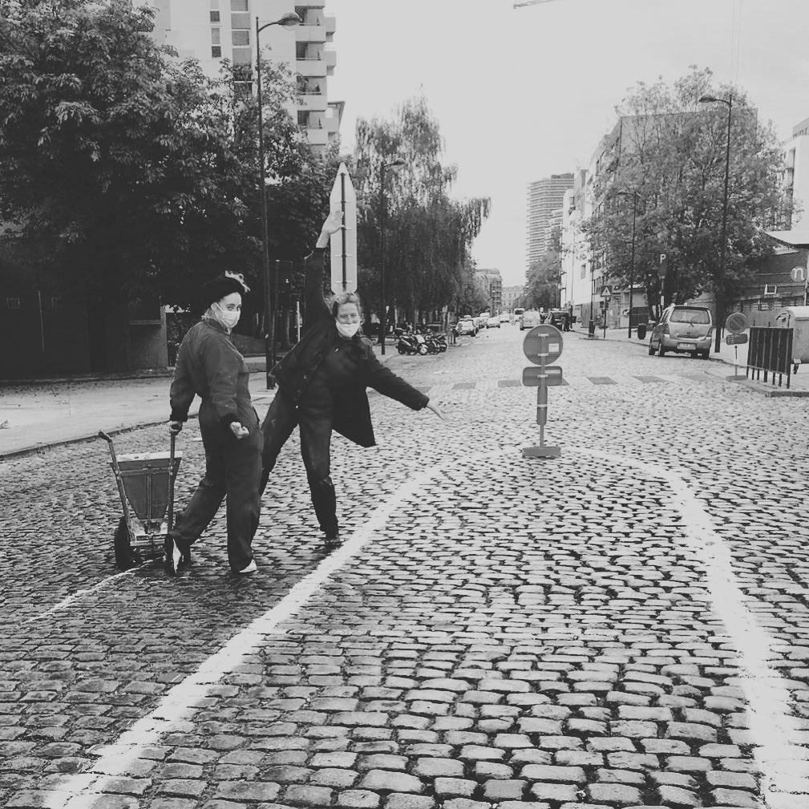
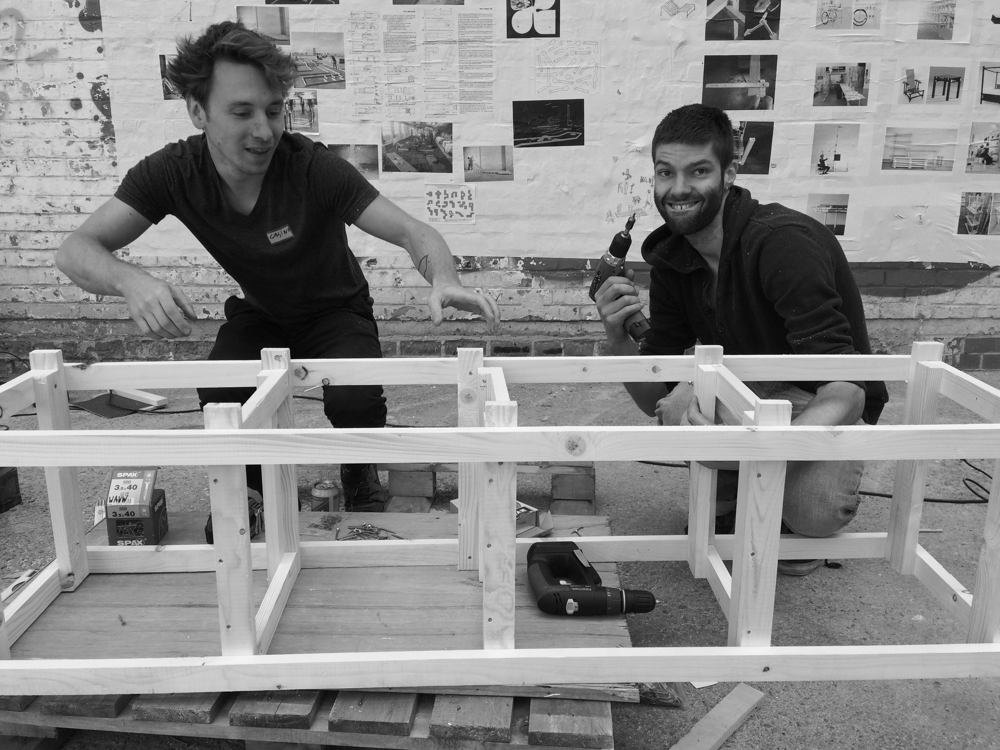
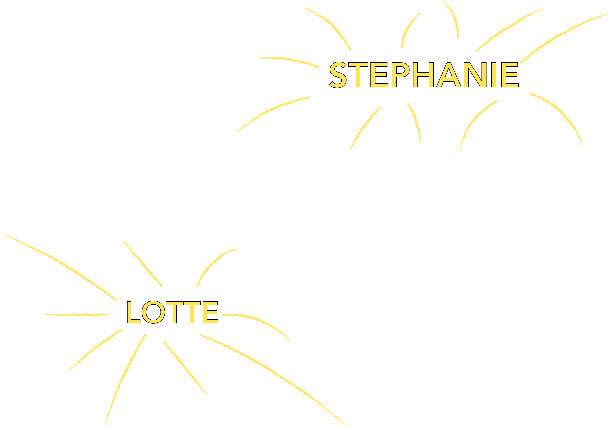

Wondering vs. Workshop:
thinking or working
Architecture vs. Arts:
A matter of pragmatism
Architecture vs. Urbanism:
A matter of scale
Urbanism vs. Utopism:
A matter of realism
WAUW zijn Wereldwijde Architectuur &
Urbanisme Workshops
WAUW activiteiten zetten kinderen,
jongeren en volwassenen aan om de
wereld van de architectuur en
stedenbouw en design te ontdekken.
WAUW nodigt tot ontwerp en creatie.
Het resultaat is niet alleen belangrijk,
wat we willen stimuleren is de analyse,
het onderzoek, het testen van
materialen & het uiteindelijke bouwen.

